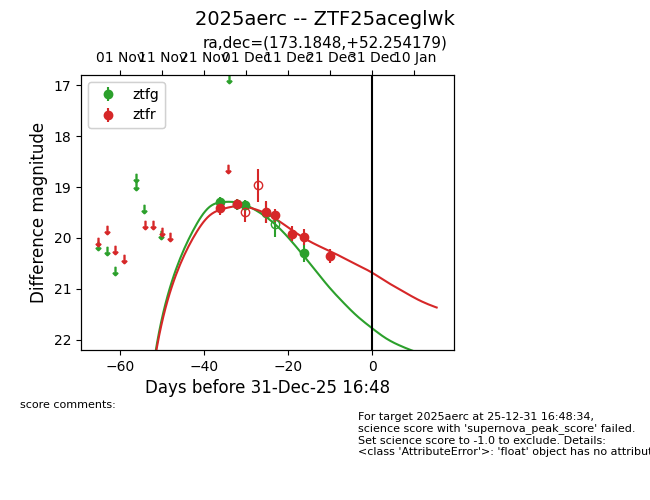
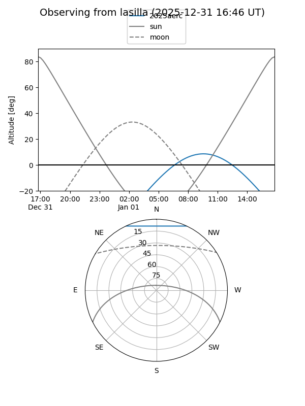
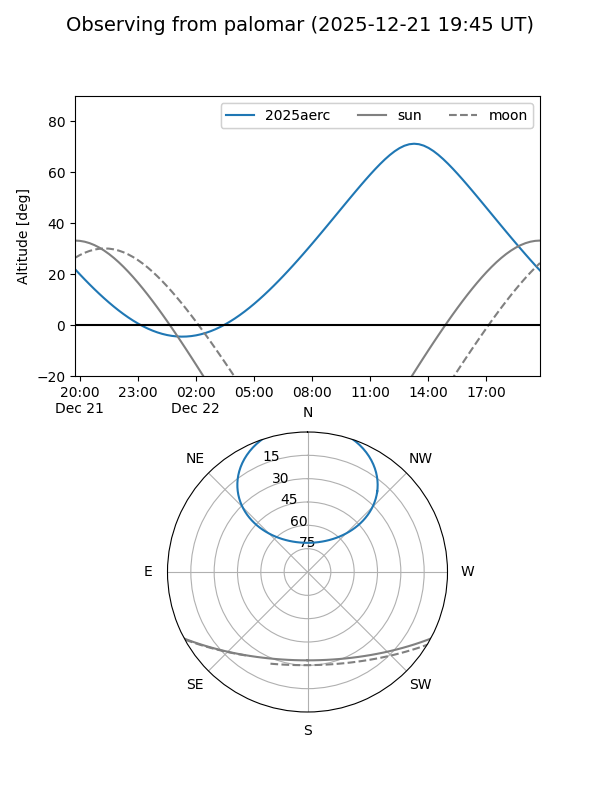

2025aerc
Target 2025aerc at 2025-12-21 13:47
Aliases and brokers:
FINK: fink-portal.org/ZTF25aceglwk
Lasair: lasair-ztf.lsst.ac.uk/objects/ZTF25aceglwk
ALeRCE: alerce.online/object/ZTF25aceglwk
TNS: wis-tns.org/object/2025aerc
YSE: ziggy.ucolick.org/yse/transient_detail/2025aerc
alt names
ZTF25aceglwk (ztf,fink_ztf)
2025aerc (tns,yse)
Coordinates:
equatorial (ra, dec) = 173.1848,+52.25418
equatorial (HMS+DMS) = 11:32:44.36,+52:15:15.04
galactic (l, b) = (147.9857,+60.87622)
Flags:
Photometry:
last ztfg=20.29, ztfr=20.36
4 ztfg, 7 ztfr detections
Lightcurve

Visibility


Additional plots